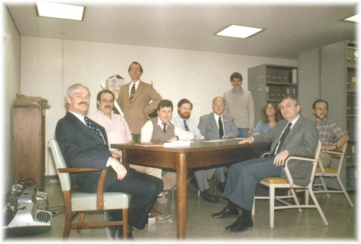

|
This photo was taken by historical artist Len Tantillo in 1985 at the State history office in the Cultural Education Center in Albany. Len insisted on shooting a group of us posed (if not poised) around a table to represent the first Common Council meeting in July 1686. This photo served as the model if not the inspiration for his drawing that we often have used to depict the city government in action! This "passport quality" group photograph (probably taken with Len's camera) included several people who were important to the formation and early history of the Colonial Albany Social History Project. It appeared alongside the "finished" product in several Tricentennial features and in The New York State History Network newsletter in 1986. It occasioned many inquiries which we had no way of servicing - until now! Seated around the table from left to right are: the mustacheod Joe Meany - close friend, military historian, devil's advocate, and dreamer; Charly Gehring - Dutch translator, close friend, and a terrific and tireless cook; Bob Mulligan - military curator, lover of a good tartan, and all-around eighteenth-century guy; myself as a boy; Tom Burke - historian, friend, and great influence on the project during its early years; the late Ed Winslow - beloved by local historians; student intern Mike Hook; graduate intern Carol Laffin; Paul Scudiere - boss and benefactor; and artist Keith Prior - who, among other things, designed the project logo. This bittersweet photo commemorates the earlier years of the Colonial Albany Project. It was the best of times, it was the . . . We were so dumb then. That group laughed a lot and so much actual fun! Home | Site Index | Navigation | Email | New York State Museum posted: 9/30/02; augmented 8/22/10 |